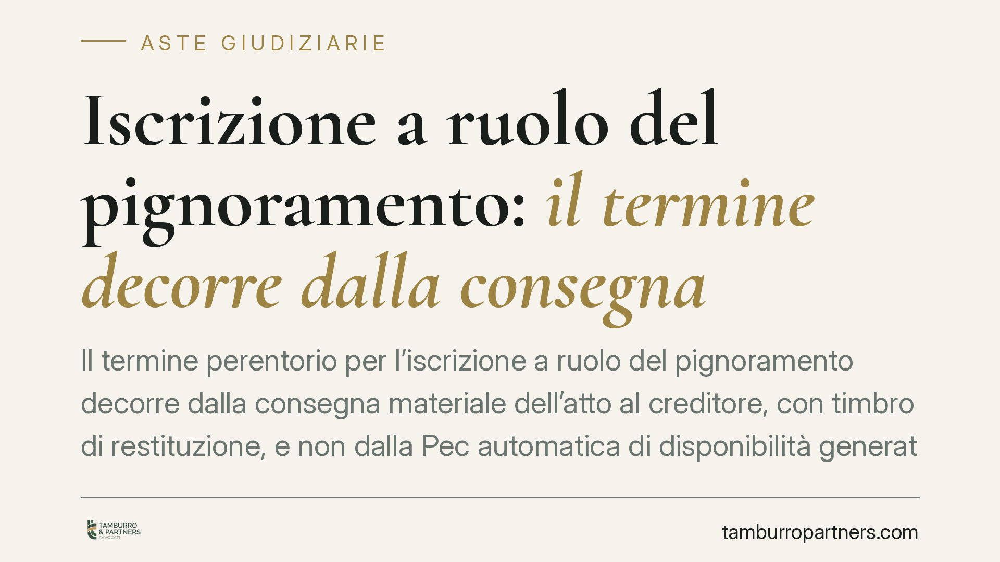

Iscrizione a ruolo del pignoramento: il termine decorre dalla consegna
Il termine perentorio per l'iscrizione a ruolo del pignoramento decorre dalla consegna materiale dell'atto al creditore, con timbro di restituzione, e non dalla Pec automatica di disponibilità generata dall'ufficio NEP. La precisazione riduce il rischio di decadenza. Sbagliare il dies a quo significa perdere l'efficacia del pignoramento: un errore procedurale con conseguenze definitive per il creditore.

Il punto
Nell'espropriazione forzata l'iscrizione a ruolo del pignoramento è un adempimento a pena di decadenza. Il creditore, dopo la notifica dell'atto tramite l'ufficiale giudiziario, deve depositare telematicamente nota di iscrizione e copie conformi entro un termine breve. Superarlo comporta la perdita di efficacia del pignoramento: non un'irregolarità sanabile, ma la caducazione dell'intera procedura, con necessità di ricominciare.
Il nodo pratico riguarda il momento da cui far partire il conteggio. Gli uffici NEP, dopo il completamento dell'attività, inviano al difensore una Pec che segnala la disponibilità dell'atto restituito. La consegna materiale — con il timbro di restituzione apposto sull'atto — può però avvenire in un momento successivo. La domanda è: da quale dei due eventi decorre il termine?
Inquadramento normativo
L'obbligo di iscrizione a ruolo del pignoramento è stato introdotto dal d.l. 12 settembre 2014, n. 132, convertito con modificazioni dalla l. 10 novembre 2014, n. 162, che ha inciso su più disposizioni del codice di procedura civile.
I termini variano a seconda del tipo di espropriazione:
- Espropriazione mobiliare presso il debitore (art. 518 c.p.c.): l'ufficiale giudiziario consegna al creditore il verbale, il titolo e il precetto; il creditore deposita la nota di iscrizione a ruolo entro quindici giorni dalla consegna. Decorso il termine, il pignoramento perde efficacia.
- Espropriazione presso terzi (art. 543 c.p.c.): il creditore deposita la nota di iscrizione a ruolo con le copie conformi dell'atto entro trenta giorni dalla consegna dell'atto notificato, a pena di inefficacia.
- Espropriazione immobiliare (art. 557 c.p.c.): il creditore deposita la nota di iscrizione con le copie dell'atto entro trenta giorni dalla consegna, con la medesima sanzione di inefficacia.
In tutti e tre i casi il legislatore àncora il dies a quo alla consegna dell'atto al creditore, non a un evento diverso. Da qui la rilevanza della distinzione tra Pec di disponibilità e consegna materiale.
La questione dei compensi degli ufficiali giudiziari e del loro riparto è governata dal d.P.R. 15 dicembre 1959, n. 1229 (ordinamento degli ufficiali giudiziari e degli aiutanti ufficiali giudiziari): la disciplina dei diritti e delle spettanze va verificata nelle specifiche disposizioni applicabili al singolo adempimento.
Pec di disponibilità e consegna materiale non coincidono
La Pec inviata dall'ufficio NEP è una comunicazione automatica che segnala la conclusione dell'attività e la messa a disposizione dell'atto. Non equivale alla consegna in senso tecnico-processuale.
La consegna materiale è l'atto con cui il creditore (o il difensore) ritira l'originale restituito, sul quale è apposto il timbro di restituzione con la data. È quella data a fissare il momento da cui decorre il termine di iscrizione a ruolo.
La differenza non è teorica. Se il creditore calcolasse il termine dalla Pec, anticiperebbe erroneamente la scadenza; se lo calcolasse da un ritiro molto posticipato, rischierebbe di ritardare adempimenti collegati. Il criterio corretto è quello ancorato al timbro di restituzione sull'atto consegnato.
Implicazioni pratiche
Per il creditore e per il difensore il rischio è la decadenza: un pignoramento eseguito correttamente perde ogni effetto se l'iscrizione a ruolo arriva fuori termine. Non si tratta di un vizio formale recuperabile, ma della caducazione dell'atto.
La conseguenza operativa è che il momento della consegna va documentato con precisione, perché è quello — e non la Pec — a determinare il calendario degli adempimenti.
Cosa fare in concreto
- Verifica il tipo di espropriazione e applica il termine corretto: 15 giorni per il mobiliare (art. 518 c.p.c.), 30 giorni per presso terzi e immobiliare (artt. 543 e 557 c.p.c.).
- Non far decorrere il termine dalla Pec di disponibilità: individua il dies a quo nella consegna materiale dell'atto con timbro di restituzione.
- Annota e conserva la data del timbro di restituzione in fascicolo, come riferimento certo per il calcolo della scadenza.
- Ritira l'atto tempestivamente presso l'ufficio NEP: un ritiro tardivo non allunga in modo indefinito i margini e complica la gestione degli adempimenti collegati.
- Predisponi in anticipo nota di iscrizione e copie conformi, così da non comprimere il termine nell'ultimo giorno utile.
Disclaimer
Contributo informativo a cura di Tamburro & Partners - Avv. Giuseppe Tamburro. Non costituisce parere legale.
Comprare bene all’asta si può.
Se vuoi acquistare un immobile all’asta in sicurezza o difendere un esecutato, scrivi allo studio. Ti rispondiamo entro un giorno lavorativo.